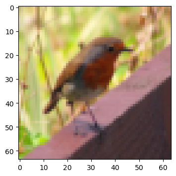
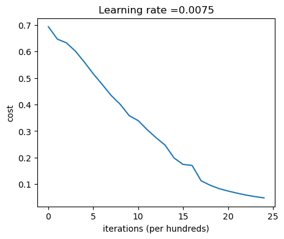
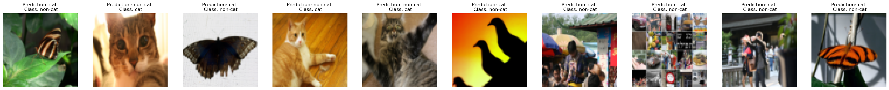

### v1.1Building your Deep Neural Network: Step by Step
Notation: - Superscript \([l]\) denotes a quantity associated with the \(l^{th}\) layer. - Example: \(a^{[L]}\) is the \(L^{th}\) layer activation. \(W^{[L]}\) and \(b^{[L]}\) are the \(L^{th}\) layer parameters. - Superscript \((i)\) denotes a quantity associated with the \(i^{th}\) example. - Example: \(x^{(i)}\) is the \(i^{th}\) training example. - Lowerscript \(i\) denotes the \(i^{th}\) entry of a vector. - Example: \(a^{[l]}_i\) denotes the \(i^{th}\) entry of the \(l^{th}\) layer’s activations).
First, import all the packages you’ll need during this assignment.
- numpy is the main package for scientific computing with Python.
- matplotlib is a library to plot graphs in Python.
- h5py is a common package to interact with a dataset that is stored on an H5 file.
- PIL and scipy are used here to test your model with your own picture at the end.
- dnn_utils provides some necessary functions for this notebook.
- testCases provides some test cases to assess the correctness of your functions
- np.random.seed(1) is used to keep all the random function calls consistent. It helps grade your work. Please don’t change the seed!
import numpy as np
import h5py
import matplotlib.pyplot as plt
from testCases import *
from dnn_app_utils_v3 import sigmoid, sigmoid_backward, relu, relu_backward, load_data
from public_tests import *
import time
import scipy
from PIL import Image
from scipy import ndimage
import copy
%matplotlib inline
plt.rcParams['figure.figsize'] = (5.0, 4.0) # set default size of plots
plt.rcParams['image.interpolation'] = 'nearest'
plt.rcParams['image.cmap'] = 'gray'
%load_ext autoreload
%autoreload 2
np.random.seed(1)To build your neural network, you’ll be implementing several “helper functions.” Here’s an outline of the steps:
- Initialize the parameters for a two-layer network and for an \(L\)-layer neural network
- Implement the forward propagation module (shown in purple in the figure below)
- Complete the LINEAR part of a layer’s forward propagation step (resulting in \(Z^{[l]}\)).
- The ACTIVATION function is provided for you (relu/sigmoid)
- Combine the previous two steps into a new [LINEAR->ACTIVATION] forward function.
- Stack the [LINEAR->RELU] forward function L-1 time (for layers 1 through L-1) and add a [LINEAR->SIGMOID] at the end (for the final layer \(L\)). This gives you a new L_model_forward function.
- Compute the loss
- Implement the backward propagation module (denoted in red in the figure below)
- Complete the LINEAR part of a layer’s backward propagation step
- The gradient of the ACTIVATION function is provided for you(relu_backward/sigmoid_backward)
- Combine the previous two steps into a new [LINEAR->ACTIVATION] backward function
- Stack [LINEAR->RELU] backward L-1 times and add [LINEAR->SIGMOID] backward in a new L_model_backward function
- Finally, update the parameters

Note:
For every forward function, there is a corresponding backward function. This is why at every step of your forward module you will be storing some values in a cache. These cached values are useful for computing gradients.
In the backpropagation module, you can then use the cache to calculate the gradients.
You will write two helper functions to initialize the parameters for your model. The first function will be used to initialize parameters for a two layer model. The second one generalizes this initialization process to \(L\) layers.
### 3.1 - 2-layer Neural Network
### Exercise 1 - initialize_parameters
Create and initialize the parameters of the 2-layer neural network.
Instructions:
- The model’s structure is: LINEAR -> RELU -> LINEAR -> SIGMOID.
- Use this random initialization for the weight matrices:
np.random.randn(d0, d1, ..., dn) * 0.01with the correct shape. The documentation for np.random.randn - Use zero initialization for the biases:
np.zeros(shape). The documentation for np.zeros
def initialize_parameters(n_x, n_h, n_y):
"""
Argument:
n_x -- size of the input layer
n_h -- size of the hidden layer
n_y -- size of the output layer
Returns:
parameters -- python dictionary containing your parameters:
W1 -- weight matrix of shape (n_h, n_x)
b1 -- bias vector of shape (n_h, 1)
W2 -- weight matrix of shape (n_y, n_h)
b2 -- bias vector of shape (n_y, 1)
"""
np.random.seed(1)
#(≈ 4 lines of code)
# W1 = ...
# b1 = ...
# W2 = ...
# b2 = ...
# CODE_START
W1 = np.random.randn(n_h,n_x) * 0.01
b1 = np.zeros((n_h,1))
W2 = np.random.randn(n_y,n_h) * 0.01
b2 = np.zeros((n_y,1))
# CODE_END
parameters = {"W1": W1,
"b1": b1,
"W2": W2,
"b2": b2}
return parameters print("Test Case 1:\n")
parameters = initialize_parameters(3,2,1)
print("W1 = " + str(parameters["W1"]))
print("b1 = " + str(parameters["b1"]))
print("W2 = " + str(parameters["W2"]))
print("b2 = " + str(parameters["b2"]))
initialize_parameters_test_1(initialize_parameters)
print("\033[90m\nTest Case 2:\n")
parameters = initialize_parameters(4,3,2)
print("W1 = " + str(parameters["W1"]))
print("b1 = " + str(parameters["b1"]))
print("W2 = " + str(parameters["W2"]))
print("b2 = " + str(parameters["b2"]))
initialize_parameters_test_2(initialize_parameters)Test Case 1:
W1 = [[ 0.01624345 -0.00611756 -0.00528172]
[-0.01072969 0.00865408 -0.02301539]]
b1 = [[0.]
[0.]]
W2 = [[ 0.01744812 -0.00761207]]
b2 = [[0.]]
All tests passed.
Test Case 2:
W1 = [[ 0.01624345 -0.00611756 -0.00528172 -0.01072969]
[ 0.00865408 -0.02301539 0.01744812 -0.00761207]
[ 0.00319039 -0.0024937 0.01462108 -0.02060141]]
b1 = [[0.]
[0.]
[0.]]
W2 = [[-0.00322417 -0.00384054 0.01133769]
[-0.01099891 -0.00172428 -0.00877858]]
b2 = [[0.]
[0.]]
All tests passed.Expected output
Test Case 1:
W1 = [[ 0.01624345 -0.00611756 -0.00528172]
[-0.01072969 0.00865408 -0.02301539]]
b1 = [[0.]
[0.]]
W2 = [[ 0.01744812 -0.00761207]]
b2 = [[0.]]
All tests passed.
Test Case 2:
W1 = [[ 0.01624345 -0.00611756 -0.00528172 -0.01072969]
[ 0.00865408 -0.02301539 0.01744812 -0.00761207]
[ 0.00319039 -0.0024937 0.01462108 -0.02060141]]
b1 = [[0.]
[0.]
[0.]]
W2 = [[-0.00322417 -0.00384054 0.01133769]
[-0.01099891 -0.00172428 -0.00877858]]
b2 = [[0.]
[0.]]
All tests passed.### 3.2 - L-layer Neural Network
The initialization for a deeper L-layer neural network is more complicated because there are many more weight matrices and bias vectors. When completing the initialize_parameters_deep function, you should make sure that your dimensions match between each layer. Recall that \(n^{[l]}\) is the number of units in layer \(l\). For example, if the size of your input \(X\) is \((12288, 209)\) (with \(m=209\) examples) then:
| Shape of W | Shape of b | Activation | Shape of Activation | |
| Layer 1 | \((n^{[1]},12288)\) | \((n^{[1]},1)\) | $Z^{[1]} = W^{[1]} X + b^{[1]} $ | \((n^{[1]},209)\) |
| Layer 2 | \((n^{[2]}, n^{[1]})\) | \((n^{[2]},1)\) | \(Z^{[2]} = W^{[2]} A^{[1]} + b^{[2]}\) | \((n^{[2]}, 209)\) |
| \(\vdots\) | \(\vdots\) | \(\vdots\) | \(\vdots\) | \(\vdots\) |
| Layer L-1 | \((n^{[L-1]}, n^{[L-2]})\) | \((n^{[L-1]}, 1)\) | \(Z^{[L-1]} = W^{[L-1]} A^{[L-2]} + b^{[L-1]}\) | \((n^{[L-1]}, 209)\) |
| Layer L | \((n^{[L]}, n^{[L-1]})\) | \((n^{[L]}, 1)\) | \(Z^{[L]} = W^{[L]} A^{[L-1]} + b^{[L]}\) | \((n^{[L]}, 209)\) |
Remember that when you compute \(W X + b\) in python, it carries out broadcasting. For example, if:
\[ W = \begin{bmatrix} w_{00} & w_{01} & w_{02} \\ w_{10} & w_{11} & w_{12} \\ w_{20} & w_{21} & w_{22} \end{bmatrix}\;\;\; X = \begin{bmatrix} x_{00} & x_{01} & x_{02} \\ x_{10} & x_{11} & x_{12} \\ x_{20} & x_{21} & x_{22} \end{bmatrix} \;\;\; b =\begin{bmatrix} b_0 \\ b_1 \\ b_2 \end{bmatrix}\tag{2}\]
Then \(WX + b\) will be:
\[ WX + b = \begin{bmatrix} (w_{00}x_{00} + w_{01}x_{10} + w_{02}x_{20}) + b_0 & (w_{00}x_{01} + w_{01}x_{11} + w_{02}x_{21}) + b_0 & \cdots \\ (w_{10}x_{00} + w_{11}x_{10} + w_{12}x_{20}) + b_1 & (w_{10}x_{01} + w_{11}x_{11} + w_{12}x_{21}) + b_1 & \cdots \\ (w_{20}x_{00} + w_{21}x_{10} + w_{22}x_{20}) + b_2 & (w_{20}x_{01} + w_{21}x_{11} + w_{22}x_{21}) + b_2 & \cdots \end{bmatrix}\tag{3} \]
### Exercise 2 - initialize_parameters_deep
Implement initialization for an L-layer Neural Network.
Instructions: - The model’s structure is [LINEAR -> RELU] $ $ (L-1) -> LINEAR -> SIGMOID. I.e., it has \(L-1\) layers using a ReLU activation function followed by an output layer with a sigmoid activation function. - Use random initialization for the weight matrices. Use np.random.randn(d0, d1, ..., dn) * 0.01. - Use zeros initialization for the biases. Use np.zeros(shape). - You’ll store \(n^{[l]}\), the number of units in different layers, in a variable layer_dims. For example, the layer_dims for last week’s Planar Data classification model would have been [2,4,1]: There were two inputs, one hidden layer with 4 hidden units, and an output layer with 1 output unit. This means W1’s shape was (4,2), b1 was (4,1), W2 was (1,4) and b2 was (1,1). Now you will generalize this to \(L\) layers! - Here is the implementation for \(L=1\) (one layer neural network). It should inspire you to implement the general case (L-layer neural network).
if L == 1:
parameters["W" + str(L)] = np.random.randn(layer_dims[1], layer_dims[0]) * 0.01
parameters["b" + str(L)] = np.zeros((layer_dims[1], 1))def initialize_parameters_deep(layer_dims):
"""
Arguments:
layer_dims -- python array (list) containing the dimensions of each layer in our network
Returns:
parameters -- python dictionary containing your parameters "W1", "b1", ..., "WL", "bL":
Wl -- weight matrix of shape (layer_dims[l], layer_dims[l-1])
bl -- bias vector of shape (layer_dims[l], 1)
"""
np.random.seed(3)
parameters = {}
L = len(layer_dims) # number of layers in the network
for l in range(1, L):
#(≈ 2 lines of code)
# parameters['W' + str(l)] = ...
# parameters['b' + str(l)] = ...
# CODE_START
parameters["W" + str(l)] = np.random.randn(layer_dims[l], layer_dims[l-1]) * 0.01
parameters["b" + str(l)] = np.zeros((layer_dims[l], 1))
# CODE_END
assert(parameters['W' + str(l)].shape == (layer_dims[l], layer_dims[l - 1]))
assert(parameters['b' + str(l)].shape == (layer_dims[l], 1))
return parametersprint("Test Case 1:\n")
parameters = initialize_parameters_deep([5,4,3])
print("W1 = " + str(parameters["W1"]))
print("b1 = " + str(parameters["b1"]))
print("W2 = " + str(parameters["W2"]))
print("b2 = " + str(parameters["b2"]))
initialize_parameters_deep_test_1(initialize_parameters_deep)
print("\033[90m\nTest Case 2:\n")
parameters = initialize_parameters_deep([4,3,2])
print("W1 = " + str(parameters["W1"]))
print("b1 = " + str(parameters["b1"]))
print("W2 = " + str(parameters["W2"]))
print("b2 = " + str(parameters["b2"]))
initialize_parameters_deep_test_2(initialize_parameters_deep)Test Case 1:
W1 = [[ 0.01788628 0.0043651 0.00096497 -0.01863493 -0.00277388]
[-0.00354759 -0.00082741 -0.00627001 -0.00043818 -0.00477218]
[-0.01313865 0.00884622 0.00881318 0.01709573 0.00050034]
[-0.00404677 -0.0054536 -0.01546477 0.00982367 -0.01101068]]
b1 = [[0.]
[0.]
[0.]
[0.]]
W2 = [[-0.01185047 -0.0020565 0.01486148 0.00236716]
[-0.01023785 -0.00712993 0.00625245 -0.00160513]
[-0.00768836 -0.00230031 0.00745056 0.01976111]]
b2 = [[0.]
[0.]
[0.]]
All tests passed.
Test Case 2:
W1 = [[ 0.01788628 0.0043651 0.00096497 -0.01863493]
[-0.00277388 -0.00354759 -0.00082741 -0.00627001]
[-0.00043818 -0.00477218 -0.01313865 0.00884622]]
b1 = [[0.]
[0.]
[0.]]
W2 = [[ 0.00881318 0.01709573 0.00050034]
[-0.00404677 -0.0054536 -0.01546477]]
b2 = [[0.]
[0.]]
All tests passed.Expected output
Test Case 1:
W1 = [[ 0.01788628 0.0043651 0.00096497 -0.01863493 -0.00277388]
[-0.00354759 -0.00082741 -0.00627001 -0.00043818 -0.00477218]
[-0.01313865 0.00884622 0.00881318 0.01709573 0.00050034]
[-0.00404677 -0.0054536 -0.01546477 0.00982367 -0.01101068]]
b1 = [[0.]
[0.]
[0.]
[0.]]
W2 = [[-0.01185047 -0.0020565 0.01486148 0.00236716]
[-0.01023785 -0.00712993 0.00625245 -0.00160513]
[-0.00768836 -0.00230031 0.00745056 0.01976111]]
b2 = [[0.]
[0.]
[0.]]
All tests passed.
Test Case 2:
W1 = [[ 0.01788628 0.0043651 0.00096497 -0.01863493]
[-0.00277388 -0.00354759 -0.00082741 -0.00627001]
[-0.00043818 -0.00477218 -0.01313865 0.00884622]]
b1 = [[0.]
[0.]
[0.]]
W2 = [[ 0.00881318 0.01709573 0.00050034]
[-0.00404677 -0.0054536 -0.01546477]]
b2 = [[0.]
[0.]]
All tests passed.## 4 - Forward Propagation Module
Now that you have initialized your parameters, you can do the forward propagation module. Start by implementing some basic functions that you can use again later when implementing the model. Now, you’ll complete three functions in this order:
- LINEAR
- LINEAR -> ACTIVATION where ACTIVATION will be either ReLU or Sigmoid.
- [LINEAR -> RELU] \(\times\) (L-1) -> LINEAR -> SIGMOID (whole model)
The linear forward module (vectorized over all the examples) computes the following equations:
\[Z^{[l]} = W^{[l]}A^{[l-1]} +b^{[l]}\tag{4}\]
where \(A^{[0]} = X\).
### Exercise 3 - linear_forward
Build the linear part of forward propagation.
Reminder: The mathematical representation of this unit is \(Z^{[l]} = W^{[l]}A^{[l-1]} +b^{[l]}\). You may also find np.dot() useful. If your dimensions don’t match, printing W.shape may help.
def linear_forward(A, W, b):
"""
Implement the linear part of a layer's forward propagation.
Arguments:
A -- activations from previous layer (or input data): (size of previous layer, number of examples)
W -- weights matrix: numpy array of shape (size of current layer, size of previous layer)
b -- bias vector, numpy array of shape (size of the current layer, 1)
Returns:
Z -- the input of the activation function, also called pre-activation parameter
cache -- a python tuple containing "A", "W" and "b" ; stored for computing the backward pass efficiently
"""
#(≈ 1 line of code)
# Z = ...
# CODE_START
Z = np.dot(W,A) + b
# CODE_END
cache = (A, W, b)
return Z, cachet_A, t_W, t_b = linear_forward_test_case()
t_Z, t_linear_cache = linear_forward(t_A, t_W, t_b)
print("Z = " + str(t_Z))
linear_forward_test(linear_forward)Z = [[ 3.26295337 -1.23429987]]
All tests passed.Expected output
Z = [[ 3.26295337 -1.23429987]]### 4.2 - Linear-Activation Forward
In this notebook, you will use two activation functions:
- Sigmoid: \(\sigma(Z) = \sigma(W A + b) = \frac{1}{ 1 + e^{-(W A + b)}}\). You’ve been provided with the
sigmoidfunction which returns two items: the activation value “a” and a “cache” that contains “Z” (it’s what we will feed in to the corresponding backward function). To use it you could just call:
A, activation_cache = sigmoid(Z)- ReLU: The mathematical formula for ReLu is \(A = RELU(Z) = max(0, Z)\). You’ve been provided with the
relufunction. This function returns two items: the activation value “A” and a “cache” that contains “Z” (it’s what you’ll feed in to the corresponding backward function). To use it you could just call:
A, activation_cache = relu(Z)For added convenience, you’re going to group two functions (Linear and Activation) into one function (LINEAR->ACTIVATION). Hence, you’ll implement a function that does the LINEAR forward step, followed by an ACTIVATION forward step.
### Exercise 4 - linear_activation_forward
Implement the forward propagation of the LINEAR->ACTIVATION layer. Mathematical relation is: \(A^{[l]} = g(Z^{[l]}) = g(W^{[l]}A^{[l-1]} +b^{[l]})\) where the activation “g” can be sigmoid() or relu(). Use linear_forward() and the correct activation function.
def linear_activation_forward(A_prev, W, b, activation):
"""
Implement the forward propagation for the LINEAR->ACTIVATION layer
Arguments:
A_prev -- activations from previous layer (or input data): (size of previous layer, number of examples)
W -- weights matrix: numpy array of shape (size of current layer, size of previous layer)
b -- bias vector, numpy array of shape (size of the current layer, 1)
activation -- the activation to be used in this layer, stored as a text string: "sigmoid" or "relu"
Returns:
A -- the output of the activation function, also called the post-activation value
cache -- a python tuple containing "linear_cache" and "activation_cache";
stored for computing the backward pass efficiently
"""
if activation == "sigmoid":
#(≈ 2 lines of code)
# Z, linear_cache = ...
# A, activation_cache = ...
# CODE_START
Z, linear_cache = linear_forward(A_prev, W, b)
A, activation_cache = sigmoid(Z)
# CODE_END
elif activation == "relu":
#(≈ 2 lines of code)
# Z, linear_cache = ...
# A, activation_cache = ...
# CODE_START
Z, linear_cache = linear_forward(A_prev, W, b)
A, activation_cache = relu(Z)
# CODE_END
cache = (linear_cache, activation_cache)
return A, cachet_A_prev, t_W, t_b = linear_activation_forward_test_case()
t_A, t_linear_activation_cache = linear_activation_forward(t_A_prev, t_W, t_b, activation = "sigmoid")
print("With sigmoid: A = " + str(t_A))
t_A, t_linear_activation_cache = linear_activation_forward(t_A_prev, t_W, t_b, activation = "relu")
print("With ReLU: A = " + str(t_A))
linear_activation_forward_test(linear_activation_forward)With sigmoid: A = [[0.96890023 0.11013289]]
With ReLU: A = [[3.43896131 0. ]]
All tests passed.Expected output
With sigmoid: A = [[0.96890023 0.11013289]]
With ReLU: A = [[3.43896131 0. ]]Note: In deep learning, the “[LINEAR->ACTIVATION]” computation is counted as a single layer in the neural network, not two layers.
For even more convenience when implementing the \(L\)-layer Neural Net, you will need a function that replicates the previous one (linear_activation_forward with RELU) \(L-1\) times, then follows that with one linear_activation_forward with SIGMOID.

### Exercise 5 - L_model_forward
Implement the forward propagation of the above model.
Instructions: In the code below, the variable AL will denote \(A^{[L]} = \sigma(Z^{[L]}) = \sigma(W^{[L]} A^{[L-1]} + b^{[L]})\). (This is sometimes also called Yhat, i.e., this is \(\hat{Y}\).)
Hints: - Use the functions you’ve previously written - Use a for loop to replicate [LINEAR->RELU] (L-1) times - Don’t forget to keep track of the caches in the “caches” list. To add a new value c to a list, you can use list.append(c).
def L_model_forward(X, parameters):
"""
Implement forward propagation for the [LINEAR->RELU]*(L-1)->LINEAR->SIGMOID computation
Arguments:
X -- data, numpy array of shape (input size, number of examples)
parameters -- output of initialize_parameters_deep()
Returns:
AL -- activation value from the output (last) layer
caches -- list of caches containing:
every cache of linear_activation_forward() (there are L of them, indexed from 0 to L-1)
"""
caches = []
A = X
L = len(parameters) // 2 # number of layers in the neural network
# Implement [LINEAR -> RELU]*(L-1). Add "cache" to the "caches" list.
# The for loop starts at 1 because layer 0 is the input
for l in range(1, L):
A_prev = A
#(≈ 2 lines of code)
# A, cache = ...
# caches ...
# CODE_START
A, cache = linear_activation_forward(A_prev, parameters["W" + str(l)], parameters["b" + str(l)], "relu")
caches.append(cache)
# CODE_END
# Implement LINEAR -> SIGMOID. Add "cache" to the "caches" list.
#(≈ 2 lines of code)
# AL, cache = ...
# caches ...
# CODE_START
AL, cache = linear_activation_forward(A, parameters["W" + str(L)], parameters["b" + str(L)], "sigmoid")
caches.append(cache)
# CODE_END
return AL, cachest_X, t_parameters = L_model_forward_test_case_2hidden()
t_AL, t_caches = L_model_forward(t_X, t_parameters)
print("AL = " + str(t_AL))
L_model_forward_test(L_model_forward)AL = [[0.03921668 0.70498921 0.19734387 0.04728177]]
All tests passed.Expected output
AL = [[0.03921668 0.70498921 0.19734387 0.04728177]]Awesome! You’ve implemented a full forward propagation that takes the input X and outputs a row vector \(A^{[L]}\) containing your predictions. It also records all intermediate values in “caches”. Using \(A^{[L]}\), you can compute the cost of your predictions.
Now you can implement forward and backward propagation! You need to compute the cost, in order to check whether your model is actually learning.
### Exercise 6 - compute_cost Compute the cross-entropy cost \(J\), using the following formula: \[-\frac{1}{m} \sum\limits_{i = 1}^{m} (y^{(i)}\log\left(a^{[L] (i)}\right) + (1-y^{(i)})\log\left(1- a^{[L](i)}\right)) \tag{7}\]
def compute_cost(AL, Y):
"""
Implement the cost function defined by equation (7).
Arguments:
AL -- probability vector corresponding to your label predictions, shape (1, number of examples)
Y -- true "label" vector (for example: containing 0 if non-cat, 1 if cat), shape (1, number of examples)
Returns:
cost -- cross-entropy cost
"""
m = Y.shape[1]
# Compute loss from aL and y.
# (≈ 1 lines of code)
# cost = ...
# CODE_START
cost = -1/m*(np.dot(Y, np.log(AL).T) + np.dot((1-Y), np.log(1-AL).T))
# CODE_END
cost = np.squeeze(cost) # To make sure your cost's shape is what we expect (e.g. this turns [[17]] into 17).
return costt_Y, t_AL = compute_cost_test_case()
t_cost = compute_cost(t_AL, t_Y)
print("Cost: " + str(t_cost))
compute_cost_test(compute_cost)Cost: 0.2797765635793422
All tests passed.Expected Output:
| cost | 0.2797765635793422 |
## 6 - Backward Propagation Module
Just as you did for the forward propagation, you’ll implement helper functions for backpropagation. Remember that backpropagation is used to calculate the gradient of the loss function with respect to the parameters.
Reminder:
The purple blocks represent the forward propagation, and the red blocks represent the backward propagation.
Now, similarly to forward propagation, you’re going to build the backward propagation in three steps: 1. LINEAR backward 2. LINEAR -> ACTIVATION backward where ACTIVATION computes the derivative of either the ReLU or sigmoid activation 3. [LINEAR -> RELU] \(\times\) (L-1) -> LINEAR -> SIGMOID backward (whole model)
For the next exercise, you will need to remember that:
bis a matrix(np.ndarray) with 1 column and n rows, i.e: b = [[1.0], [2.0]] (remember thatbis a constant)- np.sum performs a sum over the elements of a ndarray
- axis=1 or axis=0 specify if the sum is carried out by rows or by columns respectively
- keepdims specifies if the original dimensions of the matrix must be kept.
- Look at the following example to clarify:
A = np.array([[1, 2], [3, 4]])
print('axis=1 and keepdims=True')
print(np.sum(A, axis=1, keepdims=True))
print('axis=1 and keepdims=False')
print(np.sum(A, axis=1, keepdims=False))
print('axis=0 and keepdims=True')
print(np.sum(A, axis=0, keepdims=True))
print('axis=0 and keepdims=False')
print(np.sum(A, axis=0, keepdims=False))axis=1 and keepdims=True
[[3]
[7]]
axis=1 and keepdims=False
[3 7]
axis=0 and keepdims=True
[[4 6]]
axis=0 and keepdims=False
[4 6]For layer \(l\), the linear part is: \(Z^{[l]} = W^{[l]} A^{[l-1]} + b^{[l]}\) (followed by an activation).
Suppose you have already calculated the derivative \(dZ^{[l]} = \frac{\partial \mathcal{L} }{\partial Z^{[l]}}\). You want to get \((dW^{[l]}, db^{[l]}, dA^{[l-1]})\).

The three outputs \((dW^{[l]}, db^{[l]}, dA^{[l-1]})\) are computed using the input \(dZ^{[l]}\).
Here are the formulas you need: \[ dW^{[l]} = \frac{\partial \mathcal{J} }{\partial W^{[l]}} = \frac{1}{m} dZ^{[l]} A^{[l-1] T} \tag{8}\] \[ db^{[l]} = \frac{\partial \mathcal{J} }{\partial b^{[l]}} = \frac{1}{m} \sum_{i = 1}^{m} dZ^{[l](i)}\tag{9}\] \[ dA^{[l-1]} = \frac{\partial \mathcal{L} }{\partial A^{[l-1]}} = W^{[l] T} dZ^{[l]} \tag{10}\]
\(A^{[l-1] T}\) is the transpose of \(A^{[l-1]}\).
### Exercise 7 - linear_backward
Use the 3 formulas above to implement linear_backward().
Hint:
- In numpy you can get the transpose of an ndarray
AusingA.TorA.transpose()
def linear_backward(dZ, cache):
"""
Implement the linear portion of backward propagation for a single layer (layer l)
Arguments:
dZ -- Gradient of the cost with respect to the linear output (of current layer l)
cache -- tuple of values (A_prev, W, b) coming from the forward propagation in the current layer
Returns:
dA_prev -- Gradient of the cost with respect to the activation (of the previous layer l-1), same shape as A_prev
dW -- Gradient of the cost with respect to W (current layer l), same shape as W
db -- Gradient of the cost with respect to b (current layer l), same shape as b
"""
A_prev, W, b = cache
m = A_prev.shape[1]
# dW = ...
# db = ... sum by the rows of dZ with keepdims=True
# dA_prev = ...
# CODE_START
dW = 1/m * np.dot(dZ , A_prev.T)
db = 1/m * np.sum(dZ, axis = 1, keepdims=True)
dA_prev = np.dot(W.T, dZ)
# CODE_END
return dA_prev, dW, dbt_dZ, t_linear_cache = linear_backward_test_case()
t_dA_prev, t_dW, t_db = linear_backward(t_dZ, t_linear_cache)
print("dA_prev: " + str(t_dA_prev))
print("dW: " + str(t_dW))
print("db: " + str(t_db))
linear_backward_test(linear_backward)dA_prev: [[-1.15171336 0.06718465 -0.3204696 2.09812712]
[ 0.60345879 -3.72508701 5.81700741 -3.84326836]
[-0.4319552 -1.30987417 1.72354705 0.05070578]
[-0.38981415 0.60811244 -1.25938424 1.47191593]
[-2.52214926 2.67882552 -0.67947465 1.48119548]]
dW: [[ 0.07313866 -0.0976715 -0.87585828 0.73763362 0.00785716]
[ 0.85508818 0.37530413 -0.59912655 0.71278189 -0.58931808]
[ 0.97913304 -0.24376494 -0.08839671 0.55151192 -0.10290907]]
db: [[-0.14713786]
[-0.11313155]
[-0.13209101]]
All tests passed.Expected Output:
dA_prev: [[-1.15171336 0.06718465 -0.3204696 2.09812712]
[ 0.60345879 -3.72508701 5.81700741 -3.84326836]
[-0.4319552 -1.30987417 1.72354705 0.05070578]
[-0.38981415 0.60811244 -1.25938424 1.47191593]
[-2.52214926 2.67882552 -0.67947465 1.48119548]]
dW: [[ 0.07313866 -0.0976715 -0.87585828 0.73763362 0.00785716]
[ 0.85508818 0.37530413 -0.59912655 0.71278189 -0.58931808]
[ 0.97913304 -0.24376494 -0.08839671 0.55151192 -0.10290907]]
db: [[-0.14713786]
[-0.11313155]
[-0.13209101]]### 6.2 - Linear-Activation Backward
Next, you will create a function that merges the two helper functions: linear_backward and the backward step for the activation linear_activation_backward.
To help you implement linear_activation_backward, two backward functions have been provided: - sigmoid_backward: Implements the backward propagation for SIGMOID unit. You can call it as follows:
dZ = sigmoid_backward(dA, activation_cache)relu_backward: Implements the backward propagation for RELU unit. You can call it as follows:
dZ = relu_backward(dA, activation_cache)If \(g(.)\) is the activation function, sigmoid_backward and relu_backward compute \[dZ^{[l]} = dA^{[l]} * g'(Z^{[l]}). \tag{11}\]
### Exercise 8 - linear_activation_backward
Implement the backpropagation for the LINEAR->ACTIVATION layer.
def linear_activation_backward(dA, cache, activation):
"""
Implement the backward propagation for the LINEAR->ACTIVATION layer.
Arguments:
dA -- post-activation gradient for current layer l
cache -- tuple of values (linear_cache, activation_cache) we store for computing backward propagation efficiently
activation -- the activation to be used in this layer, stored as a text string: "sigmoid" or "relu"
Returns:
dA_prev -- Gradient of the cost with respect to the activation (of the previous layer l-1), same shape as A_prev
dW -- Gradient of the cost with respect to W (current layer l), same shape as W
db -- Gradient of the cost with respect to b (current layer l), same shape as b
"""
linear_cache, activation_cache = cache
if activation == "relu":
#(≈ 2 lines of code)
# dZ = ...
# dA_prev, dW, db = ...
# CODE_START
dZ = relu_backward(dA, activation_cache)
dA_prev, dW, db = linear_backward(dZ, linear_cache)
# CODE_END
elif activation == "sigmoid":
#(≈ 2 lines of code)
# dZ = ...
# dA_prev, dW, db = ...
# CODE_START
dZ = sigmoid_backward(dA, activation_cache)
dA_prev, dW, db = linear_backward(dZ, linear_cache)
# CODE_END
return dA_prev, dW, dbt_dAL, t_linear_activation_cache = linear_activation_backward_test_case()
t_dA_prev, t_dW, t_db = linear_activation_backward(t_dAL, t_linear_activation_cache, activation = "sigmoid")
print("With sigmoid: dA_prev = " + str(t_dA_prev))
print("With sigmoid: dW = " + str(t_dW))
print("With sigmoid: db = " + str(t_db))
t_dA_prev, t_dW, t_db = linear_activation_backward(t_dAL, t_linear_activation_cache, activation = "relu")
print("With relu: dA_prev = " + str(t_dA_prev))
print("With relu: dW = " + str(t_dW))
print("With relu: db = " + str(t_db))
linear_activation_backward_test(linear_activation_backward)With sigmoid: dA_prev = [[ 0.11017994 0.01105339]
[ 0.09466817 0.00949723]
[-0.05743092 -0.00576154]]
With sigmoid: dW = [[ 0.10266786 0.09778551 -0.01968084]]
With sigmoid: db = [[-0.05729622]]
With relu: dA_prev = [[ 0.44090989 0. ]
[ 0.37883606 0. ]
[-0.2298228 0. ]]
With relu: dW = [[ 0.44513824 0.37371418 -0.10478989]]
With relu: db = [[-0.20837892]]
All tests passed.Expected output:
With sigmoid: dA_prev = [[ 0.11017994 0.01105339]
[ 0.09466817 0.00949723]
[-0.05743092 -0.00576154]]
With sigmoid: dW = [[ 0.10266786 0.09778551 -0.01968084]]
With sigmoid: db = [[-0.05729622]]
With relu: dA_prev = [[ 0.44090989 0. ]
[ 0.37883606 0. ]
[-0.2298228 0. ]]
With relu: dW = [[ 0.44513824 0.37371418 -0.10478989]]
With relu: db = [[-0.20837892]]Now you will implement the backward function for the whole network!
Recall that when you implemented the L_model_forward function, at each iteration, you stored a cache which contains (X,W,b, and z). In the back propagation module, you’ll use those variables to compute the gradients. Therefore, in the L_model_backward function, you’ll iterate through all the hidden layers backward, starting from layer \(L\). On each step, you will use the cached values for layer \(l\) to backpropagate through layer \(l\). Figure 5 below shows the backward pass.

Initializing backpropagation:
To backpropagate through this network, you know that the output is: \(A^{[L]} = \sigma(Z^{[L]})\). Your code thus needs to compute dAL \(= \frac{\partial \mathcal{L}}{\partial A^{[L]}}\). To do so, use this formula (derived using calculus):
dAL = - (np.divide(Y, AL) - np.divide(1 - Y, 1 - AL)) # derivative of cost with respect to ALYou can then use this post-activation gradient dAL to keep going backward. As seen in Figure 5, you can now feed in dAL into the LINEAR->SIGMOID backward function you implemented (which will use the cached values stored by the L_model_forward function).
After that, you will have to use a for loop to iterate through all the other layers using the LINEAR->RELU backward function. You should store each dA, dW, and db in the grads dictionary. To do so, use this formula :
\[grads["dW" + str(l)] = dW^{[l]}\tag{15} \]
For example, for \(l=3\) this would store \(dW^{[l]}\) in grads["dW3"].
### Exercise 9 - L_model_backward
Implement backpropagation for the [LINEAR->RELU] \(\times\) (L-1) -> LINEAR -> SIGMOID model.
def L_model_backward(AL, Y, caches):
"""
Implement the backward propagation for the [LINEAR->RELU] * (L-1) -> LINEAR -> SIGMOID group
Arguments:
AL -- probability vector, output of the forward propagation (L_model_forward())
Y -- true "label" vector (containing 0 if non-cat, 1 if cat)
caches -- list of caches containing:
every cache of linear_activation_forward() with "relu" (it's caches[l], for l in range(L-1) i.e l = 0...L-2)
the cache of linear_activation_forward() with "sigmoid" (it's caches[L-1])
Returns:
grads -- A dictionary with the gradients
grads["dA" + str(l)] = ...
grads["dW" + str(l)] = ...
grads["db" + str(l)] = ...
"""
grads = {}
L = len(caches) # the number of layers
m = AL.shape[1]
Y = Y.reshape(AL.shape) # after this line, Y is the same shape as AL
# Initializing the backpropagation
#(1 line of code)
# dAL = ...
# CODE_START
dAL = -(np.divide(Y, AL) - np.divide(1 - Y, 1 - AL))
# CODE_END
# Lth layer (SIGMOID -> LINEAR) gradients. Inputs: "dAL, current_cache". Outputs: "grads["dAL-1"], grads["dWL"], grads["dbL"]
#(approx. 5 lines)
# current_cache = ...
# dA_prev_temp, dW_temp, db_temp = ...
# grads["dA" + str(L-1)] = ...
# grads["dW" + str(L)] = ...
# grads["db" + str(L)] = ...
# CODE_START
current_cache = caches[L-1]
dA_prev_temp, dW_temp, db_temp = linear_activation_backward(dAL, current_cache, "sigmoid")
grads["dA" + str(L-1)] = dA_prev_temp
grads["dW" + str(L)] = dW_temp
grads["db" + str(L)] = db_temp
# CODE_END
# Loop from l=L-2 to l=0
for l in reversed(range(L-1)):
# lth layer: (RELU -> LINEAR) gradients.
# Inputs: "grads["dA" + str(l + 1)], current_cache". Outputs: "grads["dA" + str(l)] , grads["dW" + str(l + 1)] , grads["db" + str(l + 1)]
#(approx. 5 lines)
# current_cache = ...
# dA_prev_temp, dW_temp, db_temp = ...
# grads["dA" + str(l)] = ...
# grads["dW" + str(l + 1)] = ...
# grads["db" + str(l + 1)] = ...
# CODE_START
current_cache = caches[l]
dA_prev_temp, dW_temp, db_temp = linear_activation_backward(grads["dA" + str(l+1)], current_cache, "relu")
grads["dA" + str(l)] = dA_prev_temp
grads["dW" + str(l+1)] = dW_temp
grads["db" + str(l+1)] = db_temp
# CODE_END
return gradst_AL, t_Y_assess, t_caches = L_model_backward_test_case()
grads = L_model_backward(t_AL, t_Y_assess, t_caches)
print("dA0 = " + str(grads['dA0']))
print("dA1 = " + str(grads['dA1']))
print("dW1 = " + str(grads['dW1']))
print("dW2 = " + str(grads['dW2']))
print("db1 = " + str(grads['db1']))
print("db2 = " + str(grads['db2']))
L_model_backward_test(L_model_backward)dA0 = [[ 0. 0.52257901]
[ 0. -0.3269206 ]
[ 0. -0.32070404]
[ 0. -0.74079187]]
dA1 = [[ 0.12913162 -0.44014127]
[-0.14175655 0.48317296]
[ 0.01663708 -0.05670698]]
dW1 = [[0.41010002 0.07807203 0.13798444 0.10502167]
[0. 0. 0. 0. ]
[0.05283652 0.01005865 0.01777766 0.0135308 ]]
dW2 = [[-0.39202432 -0.13325855 -0.04601089]]
db1 = [[-0.22007063]
[ 0. ]
[-0.02835349]]
db2 = [[0.15187861]]
All tests passed.Expected output:
dA0 = [[ 0. 0.52257901]
[ 0. -0.3269206 ]
[ 0. -0.32070404]
[ 0. -0.74079187]]
dA1 = [[ 0.12913162 -0.44014127]
[-0.14175655 0.48317296]
[ 0.01663708 -0.05670698]]
dW1 = [[0.41010002 0.07807203 0.13798444 0.10502167]
[0. 0. 0. 0. ]
[0.05283652 0.01005865 0.01777766 0.0135308 ]]
dW2 = [[-0.39202432 -0.13325855 -0.04601089]]
db1 = [[-0.22007063]
[ 0. ]
[-0.02835349]]
db2 = [[0.15187861]]In this section, you’ll update the parameters of the model, using gradient descent:
\[ W^{[l]} = W^{[l]} - \alpha \text{ } dW^{[l]} \tag{16}\] \[ b^{[l]} = b^{[l]} - \alpha \text{ } db^{[l]} \tag{17}\]
where \(\alpha\) is the learning rate.
After computing the updated parameters, store them in the parameters dictionary.
### Exercise 10 - update_parameters
Implement update_parameters() to update your parameters using gradient descent.
Instructions: Update parameters using gradient descent on every \(W^{[l]}\) and \(b^{[l]}\) for \(l = 1, 2, ..., L\).
def update_parameters(params, grads, learning_rate):
"""
Update parameters using gradient descent
Arguments:
params -- python dictionary containing your parameters
grads -- python dictionary containing your gradients, output of L_model_backward
Returns:
parameters -- python dictionary containing your updated parameters
parameters["W" + str(l)] = ...
parameters["b" + str(l)] = ...
"""
parameters = copy.deepcopy(params)
L = len(parameters) // 2 # number of layers in the neural network
# Update rule for each parameter. Use a for loop.
#(≈ 2 lines of code)
for l in range(L):
# parameters["W" + str(l+1)] = ...
# parameters["b" + str(l+1)] = ...
# CODE_START
parameters["W" + str(l+1)] = params["W" + str(l+1)] - learning_rate * grads["dW" + str(l+1)]
parameters["b" + str(l+1)] = params["b" + str(l+1)] - learning_rate * grads["db" + str(l+1)]
# CODE_END
return parameterst_parameters, grads = update_parameters_test_case()
t_parameters = update_parameters(t_parameters, grads, 0.1)
print ("W1 = "+ str(t_parameters["W1"]))
print ("b1 = "+ str(t_parameters["b1"]))
print ("W2 = "+ str(t_parameters["W2"]))
print ("b2 = "+ str(t_parameters["b2"]))
update_parameters_test(update_parameters)W1 = [[-0.59562069 -0.09991781 -2.14584584 1.82662008]
[-1.76569676 -0.80627147 0.51115557 -1.18258802]
[-1.0535704 -0.86128581 0.68284052 2.20374577]]
b1 = [[-0.04659241]
[-1.28888275]
[ 0.53405496]]
W2 = [[-0.55569196 0.0354055 1.32964895]]
b2 = [[-0.84610769]]
All tests passed.Expected output:
W1 = [[-0.59562069 -0.09991781 -2.14584584 1.82662008]
[-1.76569676 -0.80627147 0.51115557 -1.18258802]
[-1.0535704 -0.86128581 0.68284052 2.20374577]]
b1 = [[-0.04659241]
[-1.28888275]
[ 0.53405496]]
W2 = [[-0.55569196 0.0354055 1.32964895]]
b2 = [[-0.84610769]]## 7 - Load and Process the Dataset
You’ll be using the same “Cat vs non-Cat” dataset as in “Logistic Regression as a Neural Network”. The model you built back then had 70% test accuracy on classifying cat vs non-cat images. Hopefully, your new model will perform even better!
Problem Statement: You are given a dataset (“data.h5”) containing: - a training set of m_train images labelled as cat (1) or non-cat (0) - a test set of m_test images labelled as cat and non-cat - each image is of shape (num_px, num_px, 3) where 3 is for the 3 channels (RGB).
First, import helper functions
from dnn_app_utils_v3 import *
#np.random.seed(1)Let’s get more familiar with the dataset. Load the data by running the cell below.
train_x_orig, train_y, test_x_orig, test_y, classes = load_data()The following code will show you an image in the dataset. Feel free to change the index and re-run the cell multiple times to check out other images.
# Example of a picture
index = 10
plt.imshow(train_x_orig[index])
print ("y = " + str(train_y[0,index]) + ". It's a " + classes[train_y[0,index]].decode("utf-8") + " picture.")y = 0. It's a non-cat picture.
# Explore your dataset
m_train = train_x_orig.shape[0]
num_px = train_x_orig.shape[1]
m_test = test_x_orig.shape[0]
print ("Number of training examples: " + str(m_train))
print ("Number of testing examples: " + str(m_test))
print ("Each image is of size: (" + str(num_px) + ", " + str(num_px) + ", 3)")
print ("train_x_orig shape: " + str(train_x_orig.shape))
print ("train_y shape: " + str(train_y.shape))
print ("test_x_orig shape: " + str(test_x_orig.shape))
print ("test_y shape: " + str(test_y.shape))Number of training examples: 209
Number of testing examples: 50
Each image is of size: (64, 64, 3)
train_x_orig shape: (209, 64, 64, 3)
train_y shape: (1, 209)
test_x_orig shape: (50, 64, 64, 3)
test_y shape: (1, 50)As usual, you reshape and standardize the images before feeding them to the network. The code is given in the cell below.

# Reshape the training and test examples
train_x_flatten = train_x_orig.reshape(train_x_orig.shape[0], -1).T # The "-1" makes reshape flatten the remaining dimensions
test_x_flatten = test_x_orig.reshape(test_x_orig.shape[0], -1).T
# Standardize data to have feature values between 0 and 1.
train_x = train_x_flatten/255.
test_x = test_x_flatten/255.
print ("train_x's shape: " + str(train_x.shape))
print ("test_x's shape: " + str(test_x.shape))train_x's shape: (12288, 209)
test_x's shape: (12288, 50)Note: \(12,288\) equals \(64 \times 64 \times 3\), which is the size of one reshaped image vector.
8 - Model architecture
### 8.1 - 2-layer Neural Network
Now that you’re familiar with the dataset, it’s time to build a deep neural network to distinguish cat images from non-cat images!
You’re going to build two different models:
- A 2-layer neural network
- An L-layer deep neural network
Then, you’ll compare the performance of these models, and try out some different values for \(L\).
Let’s look at the two architectures:

The model can be summarized as: INPUT -> LINEAR -> RELU -> LINEAR -> SIGMOID -> OUTPUT.
Detailed Architecture of Figure 2: - The input is a (64,64,3) image which is flattened to a vector of size \((12288,1)\). - The corresponding vector: \([x_0,x_1,...,x_{12287}]^T\) is then multiplied by the weight matrix \(W^{[1]}\) of size \((n^{[1]}, 12288)\). - Then, add a bias term and take its relu to get the following vector: \([a_0^{[1]}, a_1^{[1]},..., a_{n^{[1]}-1}^{[1]}]^T\). - Multiply the resulting vector by \(W^{[2]}\) and add the intercept (bias). - Finally, take the sigmoid of the result. If it’s greater than 0.5, classify it as a cat.
### 8.2 - L-layer Deep Neural Network
It’s pretty difficult to represent an L-layer deep neural network using the above representation. However, here is a simplified network representation:

The model can be summarized as: [LINEAR -> RELU] \(\times\) (L-1) -> LINEAR -> SIGMOID
Detailed Architecture of Figure 3: - The input is a (64,64,3) image which is flattened to a vector of size (12288,1). - The corresponding vector: \([x_0,x_1,...,x_{12287}]^T\) is then multiplied by the weight matrix \(W^{[1]}\) and then you add the intercept \(b^{[1]}\). The result is called the linear unit. - Next, take the relu of the linear unit. This process could be repeated several times for each \((W^{[l]}, b^{[l]})\) depending on the model architecture. - Finally, take the sigmoid of the final linear unit. If it is greater than 0.5, classify it as a cat.
As usual, you’ll follow the Deep Learning methodology to build the model:
- Initialize parameters / Define hyperparameters
- Loop for num_iterations:
- Forward propagation
- Compute cost function
- Backward propagation
- Update parameters (using parameters, and grads from backprop)
- Use trained parameters to predict labels
Now go ahead and implement those two models!
## 9 - Two-layer Neural Network
### Exercise 11 - two_layer_model
Use the helper functions you have implemented in the previous assignment to build a 2-layer neural network with the following structure: LINEAR -> RELU -> LINEAR -> SIGMOID. The functions and their inputs are:
def initialize_parameters(n_x, n_h, n_y):
...
return parameters
def linear_activation_forward(A_prev, W, b, activation):
...
return A, cache
def compute_cost(AL, Y):
...
return cost
def linear_activation_backward(dA, cache, activation):
...
return dA_prev, dW, db
def update_parameters(parameters, grads, learning_rate):
...
return parameters### CONSTANTS DEFINING THE MODEL ####
n_x = 12288 # num_px * num_px * 3
n_h = 7
n_y = 1
layers_dims = (n_x, n_h, n_y)
learning_rate = 0.0075def two_layer_model(X, Y, layers_dims, learning_rate = 0.0075, num_iterations = 3000, print_cost=False):
"""
Implements a two-layer neural network: LINEAR->RELU->LINEAR->SIGMOID.
Arguments:
X -- input data, of shape (n_x, number of examples)
Y -- true "label" vector (containing 1 if cat, 0 if non-cat), of shape (1, number of examples)
layers_dims -- dimensions of the layers (n_x, n_h, n_y)
num_iterations -- number of iterations of the optimization loop
learning_rate -- learning rate of the gradient descent update rule
print_cost -- If set to True, this will print the cost every 100 iterations
Returns:
parameters -- a dictionary containing W1, W2, b1, and b2
"""
np.random.seed(1)
grads = {}
costs = [] # to keep track of the cost
m = X.shape[1] # number of examples
(n_x, n_h, n_y) = layers_dims
# Initialize parameters dictionary, by calling one of the functions you'd previously implemented
#(≈ 1 line of code)
# parameters = ...
# CODE_START
parameters = initialize_parameters(n_x, n_h, n_y)
# CODE_END
# Get W1, b1, W2 and b2 from the dictionary parameters.
W1 = parameters["W1"]
b1 = parameters["b1"]
W2 = parameters["W2"]
b2 = parameters["b2"]
# Loop (gradient descent)
for i in range(0, num_iterations):
# Forward propagation: LINEAR -> RELU -> LINEAR -> SIGMOID. Inputs: "X, W1, b1, W2, b2". Output: "A1, cache1, A2, cache2".
#(≈ 2 lines of code)
# A1, cache1 = ...
# A2, cache2 = ...
# CODE_START
A1, cache1 = linear_activation_forward(X, W1, b1, "relu")
A2, cache2 = linear_activation_forward(A1, W2, b2, "sigmoid")
# CODE_END
# Compute cost
#(≈ 1 line of code)
# cost = ...
# CODE_START
cost = compute_cost(A2, Y)
# CODE_END
# Initializing backward propagation
dA2 = - (np.divide(Y, A2) - np.divide(1 - Y, 1 - A2))
# Backward propagation. Inputs: "dA2, cache2, cache1". Outputs: "dA1, dW2, db2; also dA0 (not used), dW1, db1".
#(≈ 2 lines of code)
# dA1, dW2, db2 = ...
# dA0, dW1, db1 = ...
# CODE_START
dA1, dW2, db2 = linear_activation_backward(dA2, cache2, "sigmoid")
dA0, dW1, db1 = linear_activation_backward(dA1, cache1, "relu")
# CODE_END
# Set grads['dWl'] to dW1, grads['db1'] to db1, grads['dW2'] to dW2, grads['db2'] to db2
grads['dW1'] = dW1
grads['db1'] = db1
grads['dW2'] = dW2
grads['db2'] = db2
# Update parameters.
#(approx. 1 line of code)
# parameters = ...
# CODE_START
parameters = update_parameters(parameters, grads, learning_rate)
# CODE_END
# Retrieve W1, b1, W2, b2 from parameters
W1 = parameters["W1"]
b1 = parameters["b1"]
W2 = parameters["W2"]
b2 = parameters["b2"]
# Print the cost every 100 iterations
if print_cost and i % 100 == 0 or i == num_iterations - 1:
print("Cost after iteration {}: {}".format(i, np.squeeze(cost)))
if i % 100 == 0 or i == num_iterations:
costs.append(cost)
return parameters, costs
def plot_costs(costs, learning_rate=0.0075):
plt.plot(np.squeeze(costs))
plt.ylabel('cost')
plt.xlabel('iterations (per hundreds)')
plt.title("Learning rate =" + str(learning_rate))
plt.show()parameters, costs = two_layer_model(train_x, train_y, layers_dims = (n_x, n_h, n_y), num_iterations = 2, print_cost=False)
print("Cost after first iteration: " + str(costs[0]))
two_layer_model_test(two_layer_model)Cost after iteration 1: 0.6926114346158595
Cost after first iteration: 0.693049735659989
Cost after iteration 1: 0.6915746967050506
Cost after iteration 1: 0.6915746967050506
Cost after iteration 1: 0.6915746967050506
Cost after iteration 2: 0.6524135179683452
All tests passed.Expected output:
cost after iteration 1 must be around 0.69If your code passed the previous cell, run the cell below to train your parameters.
The cost should decrease on every iteration.
It may take up to 5 minutes to run 2500 iterations.
parameters, costs = two_layer_model(train_x, train_y, layers_dims = (n_x, n_h, n_y), num_iterations = 2500, print_cost=True)
plot_costs(costs, learning_rate)Cost after iteration 0: 0.693049735659989
Cost after iteration 100: 0.6464320953428849
Cost after iteration 200: 0.6325140647912677
Cost after iteration 300: 0.6015024920354665
Cost after iteration 400: 0.5601966311605747
Cost after iteration 500: 0.5158304772764729
Cost after iteration 600: 0.4754901313943325
Cost after iteration 700: 0.4339163151225749
Cost after iteration 800: 0.4007977536203889
Cost after iteration 900: 0.3580705011323798
Cost after iteration 1000: 0.3394281538366412
Cost after iteration 1100: 0.3052753636196265
Cost after iteration 1200: 0.27491377282130164
Cost after iteration 1300: 0.24681768210614832
Cost after iteration 1400: 0.19850735037466102
Cost after iteration 1500: 0.1744831811255665
Cost after iteration 1600: 0.1708076297809593
Cost after iteration 1700: 0.11306524562164734
Cost after iteration 1800: 0.09629426845937145
Cost after iteration 1900: 0.08342617959726863
Cost after iteration 2000: 0.07439078704319081
Cost after iteration 2100: 0.06630748132267927
Cost after iteration 2200: 0.05919329501038168
Cost after iteration 2300: 0.05336140348560552
Cost after iteration 2400: 0.04855478562877017
Cost after iteration 2499: 0.04421498215868951
| Cost after iteration 0 | 0.6930497356599888 |
| Cost after iteration 100 | 0.6464320953428849 |
| … | … |
| Cost after iteration 2499 | 0.04421498215868956 |
Nice! You successfully trained the model. Good thing you built a vectorized implementation! Otherwise it might have taken 10 times longer to train this.
Now, you can use the trained parameters to classify images from the dataset. To see your predictions on the training and test sets, run the cell below.
predictions_train = predict(train_x, train_y, parameters)Accuracy: 0.9999999999999998| Accuracy | 0.9999999999999998 |
predictions_test = predict(test_x, test_y, parameters)Accuracy: 0.72Expected Output:
| Accuracy | 0.72 |
Congratulations! It seems that your 2-layer neural network has better performance (72%) than the logistic regression implementation (70%, assignment week 2). Let’s see if you can do even better with an \(L\)-layer model.
Note: You may notice that running the model on fewer iterations (say 1500) gives better accuracy on the test set. This is called “early stopping”, later we’ll learn more about it. Early stopping is a way to prevent overfitting.
## 10 - L-layer Neural Network
### Exercise 12 - L_layer_model
Use the helper functions you implemented previously to build an \(L\)-layer neural network with the following structure: [LINEAR -> RELU]\(\times\)(L-1) -> LINEAR -> SIGMOID. The functions and their inputs are:
def initialize_parameters_deep(layers_dims):
...
return parameters
def L_model_forward(X, parameters):
...
return AL, caches
def compute_cost(AL, Y):
...
return cost
def L_model_backward(AL, Y, caches):
...
return grads
def update_parameters(parameters, grads, learning_rate):
...
return parameters### CONSTANTS ###
layers_dims = [12288, 20, 7, 5, 1] # 4-layer modeldef L_layer_model(X, Y, layers_dims, learning_rate = 0.0075, num_iterations = 3000, print_cost=False):
"""
Implements a L-layer neural network: [LINEAR->RELU]*(L-1)->LINEAR->SIGMOID.
Arguments:
X -- input data, of shape (n_x, number of examples)
Y -- true "label" vector (containing 1 if cat, 0 if non-cat), of shape (1, number of examples)
layers_dims -- list containing the input size and each layer size, of length (number of layers + 1).
learning_rate -- learning rate of the gradient descent update rule
num_iterations -- number of iterations of the optimization loop
print_cost -- if True, it prints the cost every 100 steps
Returns:
parameters -- parameters learnt by the model. They can then be used to predict.
"""
np.random.seed(1)
costs = [] # keep track of cost
# Parameters initialization.
#(≈ 1 line of code)
# parameters = ...
# YOUR CODE STARTS HERE
parameters = initialize_parameters_deep(layers_dims)
# YOUR CODE ENDS HERE
# Loop (gradient descent)
for i in range(0, num_iterations):
# Forward propagation: [LINEAR -> RELU]*(L-1) -> LINEAR -> SIGMOID.
#(≈ 1 line of code)
# AL, caches = ...
# YOUR CODE STARTS HERE
AL, caches = L_model_forward(X, parameters)
# YOUR CODE ENDS HERE
# Compute cost.
#(≈ 1 line of code)
# cost = ...
# YOUR CODE STARTS HERE
cost = compute_cost(AL, Y)
# YOUR CODE ENDS HERE
# Backward propagation.
#(≈ 1 line of code)
# grads = ...
# YOUR CODE STARTS HERE
grads = L_model_backward(AL, Y, caches)
# YOUR CODE ENDS HERE
# Update parameters.
#(≈ 1 line of code)
# parameters = ...
# YOUR CODE STARTS HERE
parameters = update_parameters(parameters, grads, learning_rate)
# YOUR CODE ENDS HERE
# Print the cost every 100 iterations
if print_cost and i % 100 == 0 or i == num_iterations - 1:
print("Cost after iteration {}: {}".format(i, np.squeeze(cost)))
if i % 100 == 0 or i == num_iterations:
costs.append(cost)
return parameters, costsparameters, costs = L_layer_model(train_x, train_y, layers_dims, num_iterations = 1, print_cost = False)
print("Cost after first iteration: " + str(costs[0]))
L_layer_model_test(L_layer_model)Cost after iteration 0: 0.7717493284237686
Cost after first iteration: 0.7717493284237686
Cost after iteration 1: 0.7070709008912569
Cost after iteration 1: 0.7070709008912569
Cost after iteration 1: 0.7070709008912569
Cost after iteration 2: 0.7063462654190897
All tests passed.If your code passed the previous cell, run the cell below to train your model as a 4-layer neural network.
The cost should decrease on every iteration.
It may take up to 5 minutes to run 2500 iterations.
parameters, costs = L_layer_model(train_x, train_y, layers_dims, num_iterations = 2500, print_cost = True)Cost after iteration 0: 0.7717493284237686
Cost after iteration 100: 0.6720534400822914
Cost after iteration 200: 0.6482632048575212
Cost after iteration 300: 0.6115068816101356
Cost after iteration 400: 0.5670473268366111
Cost after iteration 500: 0.5401376634547801
Cost after iteration 600: 0.5279299569455267
Cost after iteration 700: 0.4654773771766851
Cost after iteration 800: 0.36912585249592794
Cost after iteration 900: 0.39174697434805356
Cost after iteration 1000: 0.3151869888600615
Cost after iteration 1100: 0.2726998441789385
Cost after iteration 1200: 0.23741853400268137
Cost after iteration 1300: 0.19960120532208644
Cost after iteration 1400: 0.18926300388463305
Cost after iteration 1500: 0.16118854665827753
Cost after iteration 1600: 0.14821389662363316
Cost after iteration 1700: 0.13777487812972944
Cost after iteration 1800: 0.12974017549190123
Cost after iteration 1900: 0.12122535068005211
Cost after iteration 2000: 0.1138206066863371
Cost after iteration 2100: 0.10783928526254132
Cost after iteration 2200: 0.10285466069352679
Cost after iteration 2300: 0.10089745445261786
Cost after iteration 2400: 0.09287821526472395
Cost after iteration 2499: 0.088439943441702| Cost after iteration 0 | 0.771749 |
| Cost after iteration 100 | 0.672053 |
| … | … |
| Cost after iteration 2499 | 0.088439 |
pred_train = predict(train_x, train_y, parameters)Accuracy: 0.9856459330143539Expected Output:
| Train Accuracy | 0.985645933014 |
pred_test = predict(test_x, test_y, parameters)Accuracy: 0.8Expected Output:
| Test Accuracy | 0.8 |
Congrats! It seems that your 4-layer neural network has better performance (80%) than your 2-layer neural network (72%) on the same test set.
This is pretty good performance for this task. Nice job!
Later, we’ll be able to obtain even higher accuracy by systematically searching for better hyperparameters: learning_rate, layers_dims, or num_iterations, for example.
First, take a look at some images the L-layer model labeled incorrectly. This will show a few mislabeled images.
print_mislabeled_images(classes, test_x, test_y, pred_test)
A few types of images the model tends to do poorly on include: - Cat body in an unusual position - Cat appears against a background of a similar color - Unusual cat color and species - Camera Angle - Brightness of the picture - Scale variation (cat is very large or small in image)
## 12 - Test with your own image ##
From this point, if you so choose, you can use your own image to test the output of your model. To do that follow these steps:
- Click on “File” in the upper bar of this notebook, then click “Open”.
- Add your image to this Jupyter Notebook’s directory, in the “images” folder
- Change your image’s name in the following code
- Run the code and check if the algorithm is right (1 = cat, 0 = non-cat)!
## CODE_START ##
my_image = "my_image.jpg" # change this to the name of your image file
my_label_y = [1] # the true class of your image (1 -> cat, 0 -> non-cat)
## CODE_END ##
fname = "images/" + my_image
image = np.array(Image.open(fname).resize((num_px, num_px)))
plt.imshow(image)
image = image / 255.
image = image.reshape((1, num_px * num_px * 3)).T
my_predicted_image = predict(image, my_label_y, parameters)
print ("y = " + str(np.squeeze(my_predicted_image)) + ", your L-layer model predicts a \"" + classes[int(np.squeeze(my_predicted_image)),].decode("utf-8") + "\" picture.")Accuracy: 1.0
y = 1.0, your L-layer model predicts a "cat" picture.